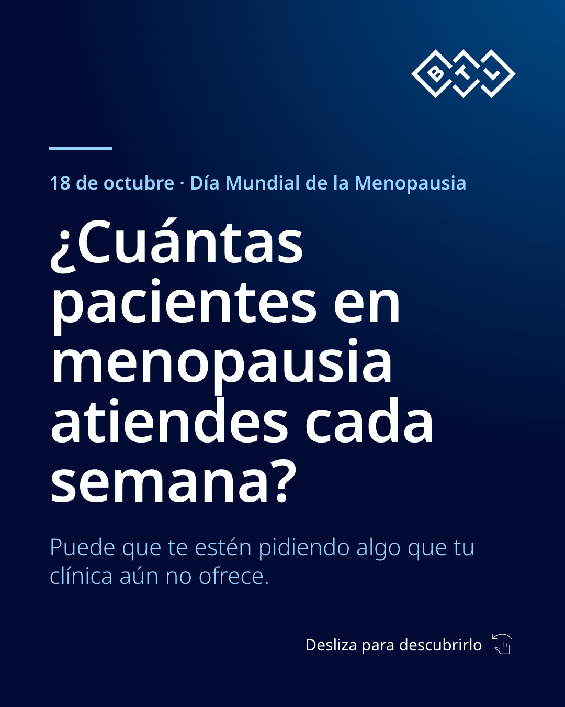
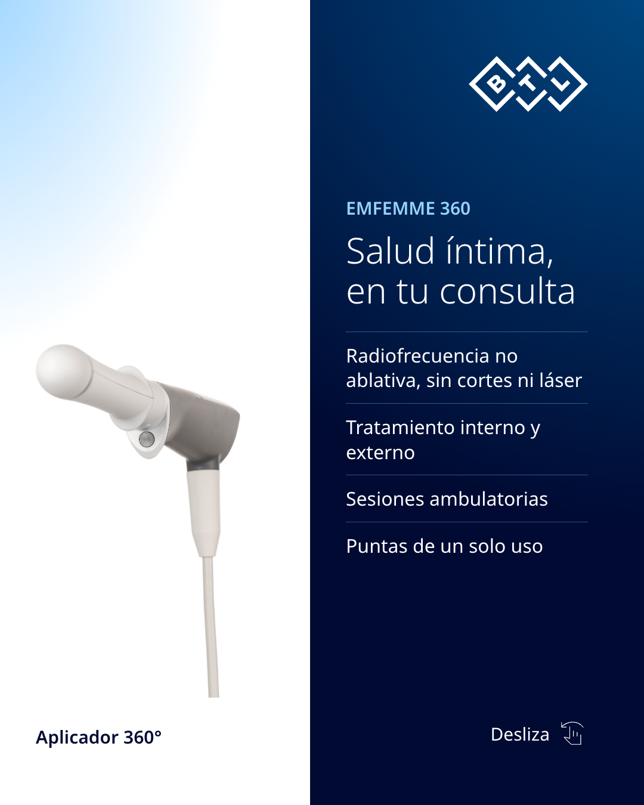
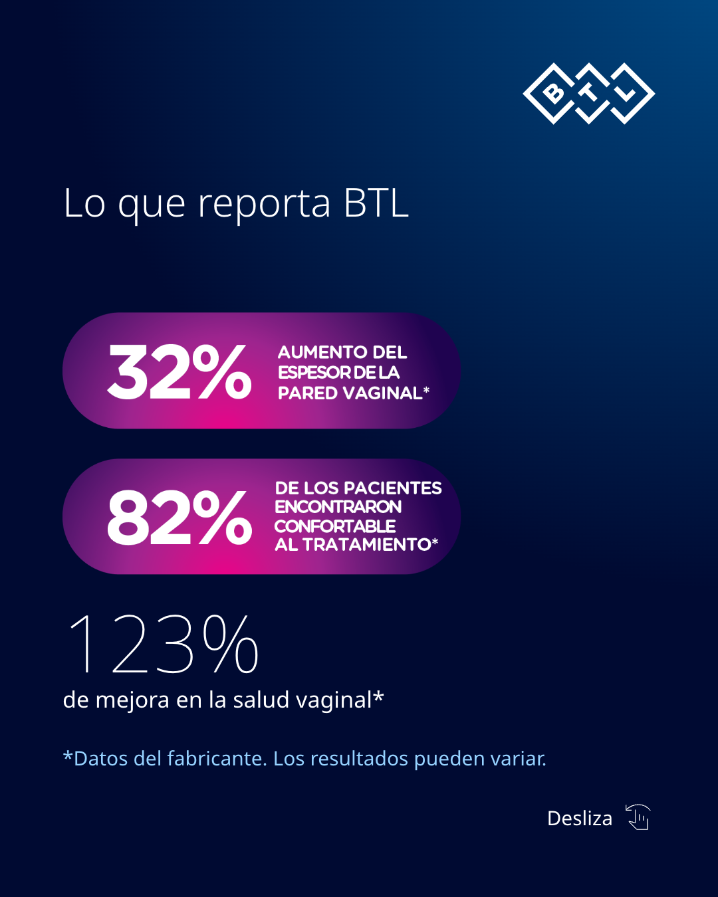
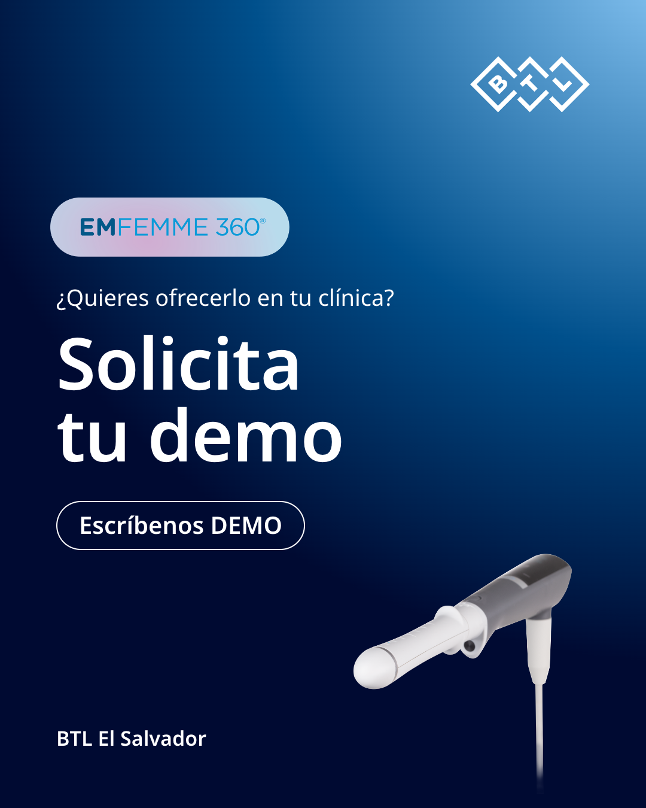

Este 18 de octubre, Día Mundial de la Menopausia: ¿cuántas pacientes en menopausia atiendes cada semana? Puede que te estén pidiendo algo que tu clínica aún no ofrece. La salud íntima femenina es una conversación que puede empezar en tu consulta. EMFEMME 360 es un tratamiento de radiofrecuencia no ablativa, sin cortes ni láser, con aplicador de 360° y sesiones ambulatorias. ¿Quieres incorporarlo en tu clínica en El Salvador? Escríbenos "DEMO" por mensaje directo. #DíaMundialDeLaMenopausia #SaludÍntima #EMFEMME360 #MedicinaEstética #ElSalvador